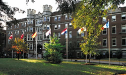

Webster Hall
Webster Hall, formerly known as the Administration Building, was designed by George Barnett, the son of well-known architect George I. Barnett. Ground was broken for the building on September 8, 1915. The cornerstone was laid on November 1, 1915. The building opened in 1916 and was dedicated on October 12, 1916.
The Sisters of Loretto had to purchase the furnishings for Webster Hall, everything from the pews in the chapel to the beds for the students. An inventory of these purchases from 1916 gives us a sense of the decor of the building and daily life of its faculty, staff, and students.
A 1973 renovation included the chapel, the old auditorium, the west wing of the second floor, and the Red Carpet lounge. The renovation was funded by a Kresge grant of $100,000 and Danforth Foundation funding of $60,000.
Chapel Hall was dedicated on October 16, 1973. Chapel Hall was renamed Winifred Moore Auditorium in April, 1974. Winifred Moore was the mother of a major campus donor, Mrs. Fred Rogers. Winifred Moore Auditorium seats 250 people and is used for lectures, concerts, and films. It is the home of the Webster Film Series
Webster Hall was added to the National Register of Historic Places as part of the Webster College-Eden Theological Seminary Collegiate District on December 28, 1982. A ceremony honoring the recognition of this historic district was held June 29, 1984.
The building was renamed Webster Hall in 1992. The name Webster Hall was chosen to honor the previous land owner, Benjamin Webster, and the city of Webster Groves. Webster Hall was rededicated on September 8, 1992.
References
Ryan, Craig.Ad. Building Given New Look. The Broadside, vol. 4, no. 1, September 11, 1973, p. 1
Campbell, Chris. Media, Music, Prayer at Chapel Hall Dedication. The Broadside, vol. 4, no. 7, November 5, 1973, p. 1.
Renovated Chapel Named. The Broadside, vol. 4, no. 23, April 22, 1974, p. 2.
Howell, April. AB Building Renamed Webster Hall. The Journal, vol. 32, no. 1, August 27 - September 3, 1992, p. 1, 6.
Robinson, Debra A. Webster Hall Rededicated. The Journal, vol. 32, no. 4, September 17-24, 1992, p. 3.